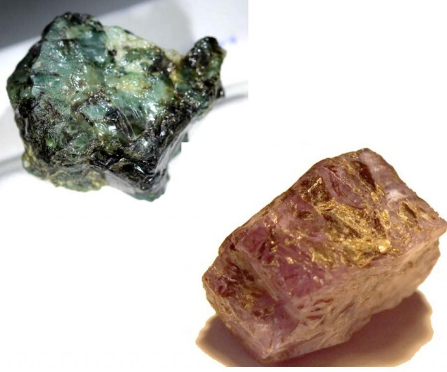
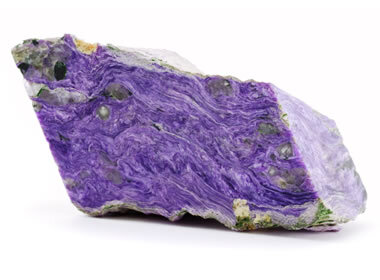
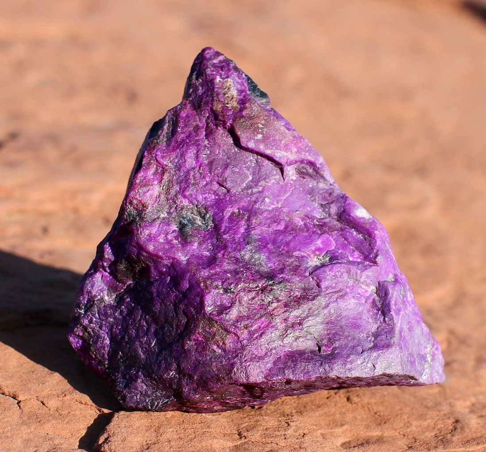
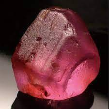

Exploring the Diverse World of Purple Crystals and Gemstones

Purple is a color that symbolizes royalty, mystery, and spirituality. It is also a color that can be found in some of the most beautiful and rare gemstones in the world. Purple gemstones are crystals that have a purple hue, ranging from light lavender to deep violet. They are formed by various geological processes, such as volcanic activity, metamorphism, and hydrothermal alteration. They are often prized for their rarity and value, as they require specific conditions and elements to produce their color.
In this article, we will explore the different types of purple gemstones, their properties, meanings, and uses. We will learn about the appearance, origin, varieties, and characteristics of each purple gemstone, as well as their metaphysical and healing properties. We will also see how purple gemstones are used in jewelry, art, and decoration, and how to care for them properly. Let's dive right into it.
Common Uses and Applications of Purple Crystals and Gemstones
Purple crystals and gemstones have many uses and applications, both practical and aesthetic. Here are some of the general ways that people use these beautiful stones:
- Jewelry: Purple crystals and gemstones are often used to make jewelry, such as rings, earrings, necklaces, bracelets, and brooches. They can add a touch of elegance, sophistication, and glamour to any outfit. They can also express the personality, mood, and style of the wearer. Purple jewelry can be worn for various occasions, such as weddings, parties, or casual outings.
- Art: Purple crystals and gemstones are also used to make art, such as sculptures, paintings, mosaics, and stained glass. They can create stunning visual effects, such as sparkle, color, and contrast. They can also convey different meanings, emotions, and messages through their shapes, forms, and patterns. Purple art can be displayed in homes, offices, museums, or galleries.
- Decoration: Purple crystals and gemstones are used to decorate various objects, such as vases, lamps, clocks, mirrors, and furniture. They can enhance the beauty, value, and functionality of these items. They can also create a pleasant and harmonious atmosphere in the environment. Purple decoration can be found in homes, hotels, restaurants, or shops.
- Healing: Purple crystals and gemstones are also used for healing purposes, such as physical, emotional, mental, and spiritual healing. They can balance the energy, chakras, and aura of the body. They can also cleanse, protect, and heal the mind, heart, and soul. Purple healing can be done through various methods, such as meditation, crystal therapy, reiki, or aromatherapy.
- Collection: Purple crystals and gemstones are also collected by many people, especially rockhounds and geology enthusiasts. They can appreciate the rarity, beauty, and uniqueness of these stones. They can also learn about their origin, formation, properties, and history. Purple collection can be done for personal enjoyment, education, or investment.
Properties and Characteristics of Different Purple Crystals and Gems
There are many purple gemstones, each with its beauty and uniqueness. Here are some of the most common and popular purple gemstones, along with their features and functions.
-
Amethyst

Amethyst is the most popular and well-known purple gemstone. It is a variety of quartz that has a purple color, ranging from pale lilac to deep purple. Amethyst is transparent to translucent and often has inclusions or zones of different shades of purple. Amethyst has a vitreous luster and a hexagonal crystal system.
Amethyst is found in many places worldwide, but the most important sources are Brazil, Uruguay, Bolivia, Zambia, and Madagascar. There are also different varieties of amethyst, such as Brazilian amethyst, African amethyst, and ametrine. Ametrine is a rare and special type of amethyst with both purple and yellow colors, due to the presence of iron and citrine in the crystal.
Amethyst has a hardness of 7 on the Mohs scale, which makes it durable and resistant to scratches. It has a refractive index of 1.54-1.55, which means it has a moderate brilliance and fire. It also has a property called pleochroism, which means it shows different colors when viewed from different angles. Amethyst can show purple, red, and blue colors depending on the direction of light.
Uses of Amethyst
Amethyst is a gemstone that has many metaphysical and healing properties. It is considered a stone of peace, calmness, and balance. It can help to reduce stress, anxiety, and negative emotions. It can also enhance intuition, spirituality, and psychic abilities. Amethyst is associated with the crown and third eye chakras, which are the centers of wisdom and awareness.
Amethyst is widely used in jewelry, art, and decoration. It can be cut into various shapes and sizes, such as round, oval, pear, marquise, cushion, and heart. It can also be carved into beads, cabochons, spheres, and figurines. Amethyst is often set in silver, gold, or platinum, and can be combined with other gemstones, such as diamonds, pearls, and turquoise. Amethyst is also used to make sculptures, vases, lamps, and other decorative items.
-
Purple Sapphire

Purple sapphire is a rare and expensive purple gemstone. It is a variety of corundum that has a purple color, ranging from light lavender to dark purple. Purple sapphire is transparent to translucent and often has inclusions or needles of rutile, which can create a star effect. Purple sapphire has a vitreous to adamantine luster and a trigonal crystal system.
Purple sapphire is found in a few places around the world, but the most important sources are Sri Lanka, Madagascar, Tanzania, and Myanmar. There are also different varieties of purple sapphire, such as Ceylon purple sapphire, Madagascar purple sapphire, and color-changing purple sapphire. Color-changing purple sapphire is a rare and special type of purple sapphire that changes color from purple to blue or pink depending on the light source.
Purple sapphire has a hardness of 9 on the Mohs scale, which makes it one of the hardest and most durable gemstones. It has a refractive index of 1.76-1.77, which means it has a high brilliance and fire. It also has a property called fluorescence, which means it can glow under ultraviolet light. Purple sapphire can show blue, red, or orange fluorescence depending on the trace elements in the crystal.
Uses of Purple Sapphire
Purple sapphire is a gemstone that has many metaphysical and healing properties. It is said to promote wisdom, intuition, and spirituality. It is said to enhance mental clarity, creativity, and vision. It can also promote self-confidence, self-expression, and self-love. Purple sapphire is associated with the third eye and crown chakras, which are the centers of insight and enlightenment.
Purple sapphire is a popular gemstone used in jewelry, art, and decoration. It can be cut into various shapes and sizes—round, oval, pear-shaped (also known as "teardrop"), marquise (also called "navette"), cushion (also known as "pillow"), emerald (a rectangular shape with cut corners), or star-cut (a design that resembles the shape of a star).
Purple sapphire is often set in gold, platinum, or titanium, and can be combined with other gemstones, such as diamonds, rubies, and emeralds. Purple sapphire is also used to make rings, pendants, earrings, and bracelets.
-
Purple Opal

Purple opal is a unique and attractive purple gemstone. It is a variety of opal that has a purple color, ranging from light lavender to dark purple. Purple opal is opaque to translucent and often has patches or veins of other colors, such as white, pink, or blue. Purple opal has a waxy to resinous luster and an amorphous crystal system.
Purple opal is found in a few places around the world, but the most important sources are Mexico, Australia, and Ethiopia. There are also different varieties of purple opal, such as Mexican purple opal, Australian purple opal, and Ethiopian purple opal. Ethiopian purple opal is a rare and special type of purple opal that has a property called play of color, which means it can show flashes of rainbow colors when moved under light.
Purple opal has a hardness of 5.5-6.5 on the Mohs scale, which makes it relatively soft and prone to scratches. It has a refractive index of 1.37-1.47, which means it has a low brilliance and fire. It also has a property called opalescence, which means it can show a milky or pearly sheen when light is reflected from its surface.
Uses of Purple Opal
Purple opal is considered a stone of creativity, imagination, and transformation. It is believed to have many metaphysical and healing properties like stimulating new ideas, inspiring artistic expression, and facilitating change. It can also foster emotional healing, joy, and optimism. Purple opal is associated with the heart and crown chakras, which are the centers of love and connection.
Purple opal is a popular choice for jewelry, art, and decoration. It can be cut into many different shapes—rounds, ovals, pears, marquises (also known as navettes), cushions (also called cabochons), and hearts. It can also be carved into beads, spheres, and figurines.
Purple opal is often set in silver, copper, or brass, and can be combined with other gemstones, such as turquoise, moonstone, and quartz. Purple opal is also used to make necklaces, brooches, earrings, and pendants.
-
Purple Garnet

Purple garnet is a rare and stunning purple gemstone. It is a variety of garnets that have a purple color, ranging from light plum to dark purple. Purple garnet is transparent to translucent and often has a reddish or pinkish hue. Purple garnet has a vitreous to resinous luster and a cubic crystal system.
Purple garnet is found in a few places around the world, but the most important sources are Tanzania, Mozambique, and Sri Lanka. There are also different varieties of purple garnets, such as rhodolite, pyrope, and spessartine. Rhodolite is the most common and popular type of purple garnet, which has a raspberry-like color and high clarity.
Purple garnet has a hardness of 6.5-7.5 on the Mohs scale, which makes it relatively hard and durable. It has a refractive index of 1.74-1.83, which means it has a high brilliance and fire. It also has a property called dispersion, which means it can show flashes of rainbow colors when light is refracted through the gemstone.
Uses of Purple Garnet
Purple garnet is a gemstone that has been used in many cultures for its metaphysical and healing properties. It is considered a stone of passion, courage, and creativity. It can help to ignite the fire within, inspire action, and overcome challenges. It can also enhance love, romance, and intimacy. Purple garnet is associated with the root and heart chakras, which are the centers of survival and emotion.
For jewelry, art, and decoration, purple garnet can be cut into various shapes and sizes, such as round, oval, pear, marquise, cushion, and princess. It can also be faceted, cabochon, or rose-cut. Purple garnet is often set in gold, silver, or platinum, and can be combined with other gemstones, such as diamonds, pearls, and amethyst. Purple garnet is also used to make rings, earrings, necklaces, and brooches.
-
Purple Diamond

Purple diamond is a very rare and expensive purple gemstone. It is a variety of diamonds that have a purple color, ranging from light lilac to deep purple. Purple diamonds are transparent to translucent and often have secondary colors, such as pink, blue, or gray. Purple diamond has an adamantine luster and a cubic crystal system.
Purple diamond is found in a few places around the world, but the most important sources are Australia, Russia, and Brazil. There are also different varieties of purple diamonds, such as fancy purple diamonds, fancy intense purple diamonds, and fancy vivid purple diamonds. Fancy vivid purple diamond is the most rare and valuable type of purple diamond, which has a pure and saturated purple color.
Purple diamond has a hardness of 10 on the Mohs scale, which makes it the hardest and most durable gemstone. It has a refractive index of 2.42, which means it has a very high brilliance and fire. It also has a property called fluorescence, which means it can glow under ultraviolet light. Purple diamonds can show blue, red, or orange fluorescence depending on the trace elements in the crystal.
Uses of Purple Diamond
Purple diamonds are considered a stone of royalty, power, and luxury. It can help to attract wealth, success, and fame. It can also enhance charisma, confidence, and leadership. Purple diamond is associated with the crown and third eye chakras, which are the centers of divine and inner vision.
In jewelry making, art, and decoration, purple diamond can be cut into various shapes and sizes, such as round, oval, pear, marquise, cushion, and radiant. It can also be faceted, cabochon, or star-cut. Purple diamond is often set in platinum, white gold, or rose gold, and can be combined with other gemstones, such as diamonds, sapphires, and rubies. Purple diamond is also used to make pendants, earrings, bracelets, and tiaras.
-
Alexandrite
Alexandrite is a unique and fascinating purple gemstone. It is a variety of chrysoberyl that has a purple color, ranging from light lavender to dark purple. Alexandrite is transparent to translucent and has a remarkable property called color change. Color change means that alexandrite can change color from purple to green or blue depending on the light source.
Alexandrite is found in a few places around the world, but the most important sources are Russia, Brazil, and India. There are also different varieties of alexandrite, such as natural alexandrite, synthetic alexandrite, and cat’s eye alexandrite. Cat’s eye alexandrite is a rare and special type of alexandrite that has a property called chatoyancy, which means it can show a silvery or golden eye-like reflection when light is reflected from its surface.
Alexandrite has a hardness of 8.5 on the Mohs scale, which makes it very hard and durable. It has a refractive index of 1.74-1.75, which means it has a high brilliance and fire. It also has a property called pleochroism, which means it shows different colors when viewed from different angles. Alexandrite can show purple, green, and blue colors depending on the direction of light.
Uses of Alexandrite
Alexandrite is believed to have many metaphysical and healing properties. It is considered a stone of magic, mystery, and transformation. It can help to adapt to changing situations, enhance intuition, and manifest desires. It can also balance the physical, emotional, and spiritual aspects of the self. Alexandrite is associated with the heart and crown chakras, which are the centers of love and connection.
Alexandrite is widely used in jewelry, art, and decoration. It can be cut into various shapes and sizes, such as round, oval, pear, marquise, cushion, and emerald. It can also be faceted, cabochon, or cat’s eye-cut. Alexandrite is often set in gold, silver, or platinum, and can be combined with other gemstones, such as diamonds, pearls, and emeralds. Alexandrite is also used to make rings, pendants, earrings, and brooches.
-
Charoite
Charoite is a rare and beautiful purple gemstone. It is a mineral that has a purple color, ranging from light lilac to dark purple. Charoite is opaque to translucent and often has swirls or patterns of white, black, or gray. Charoite has a silky to pearly luster and a monoclinic crystal system.
Charoite is found in only one place in the world, which is the Chara River in Siberia, Russia. There are also different varieties of charoite, such as grade A charoite, grade B charoite, and grade C charoite. Grade A charoite is the most rare and valuable type of charoite, which has a deep and vivid purple color and high clarity.
Charoite has a hardness of 5-6 on the Mohs scale, which makes it relatively soft and prone to scratches. It has a refractive index of 1.55-1.56, which means it has a moderate brilliance and fire. It also has a property called chatoyancy, which means it can show a silvery or golden eye-like reflection when light is reflected from its surface.
Uses of Charoite
Charoite is a gemstone that has many metaphysical and healing properties. It is considered a stone of transformation, awakening, and protection. It can help to overcome fears, release negative emotions, and embrace change. It can also enhance psychic abilities, intuition, and spiritual awareness. Charoite is associated with the third eye and crown chakras, which are the centers of insight and enlightenment.
Charoite is widely used in jewelry, decoration, and even art. It can also be carved into beads, cabochons, spheres, and figurines. Charoite is often set in silver, copper, or brass, and can be combined with other gemstones, such as turquoise, amethyst, and quartz. Charoite is also used to make necklaces, earrings, bracelets, and pendants.
-
Grape Agate

Grape Agate is a unique and attractive purple gemstone. It is a variety of quartz that has a purple color, ranging from light lavender to dark purple. Grape Agate is opaque to translucent and has a botryoidal or grape-like shape. Grape Agate has a waxy to vitreous luster and a trigonal crystal system.
Grape Agate is found in a few places around the world, but the most important source is Sulawesi, Indonesia. There are also different varieties of Grape Agate, such as purple Grape Agate, green Grape Agate, and blue Grape Agate. Purple Grape Agate is the most common and popular type of Grape Agate, which has a rich and deep purple color and a high sparkle.
Grape Agate has a hardness of 6.5-7 on the Mohs scale, which makes it durable and resistant to scratches. It has a refractive index of 1.54-1.55, which means it has a moderate brilliance and fire. It also has a property called drusy, which means it has a coating of tiny crystals on its surface that add to its sparkle and beauty.
Uses of Grape Agate
Grape Agate is a gemstone that has many metaphysical and healing properties. It is considered a stone of dreams, visions, and intuition. It can help to enhance the connection with the higher self, the spirit guides, and the angelic realm. It can also stimulate the imagination, creativity, and psychic abilities. Grape Agate is associated with the third eye and crown chakras, which are the centers of insight and enlightenment.
Grape Agate is widely used in jewelry, art, and decoration. It can be cut into various shapes and sizes, such as round, oval, pear, marquise, cushion, and heart. It can also be carved into beads, cabochons, spheres, and figurines. Grape Agate is often set in silver, copper, or brass, and can be combined with other gemstones, such as amethyst, quartz, and turquoise. Grape Agate is also used to make necklaces, earrings, bracelets, and pendants.
-
Purple Fluorite

Purple fluorite is a lovely and soothing purple gemstone. It is a mineral that has a purple color, ranging from light lavender to dark purple. Purple fluorite is transparent to translucent and often has stripes or bands of different shades of purple. Purple fluorite has a vitreous to pearly luster and a cubic crystal system.
Purple fluorite is found in many places around the world, but the most important sources are China, Mexico, and South Africa. There are also different varieties of purple fluorite, such as rainbow fluorite, blue fluorite, and green fluorite. Rainbow fluorite is a beautiful and special type of purple fluorite that has multiple colors, such as purple, blue, green, and yellow.
Purple fluorite has a hardness of 4 on the Mohs scale, which makes it soft and fragile. It has a refractive index of 1.43-1.45, which means it has a low brilliance and fire. It also has a property called fluorescence, which means it can glow under ultraviolet light. Purple fluorite can show blue, purple, or white fluorescence depending on the trace elements in the mineral.
Uses of Purple Fluorite
Purple fluorite is considered a stone of clarity, calmness, and concentration. It can help to clear the mind, reduce stress, and improve focus. It can also enhance memory, learning, and communication. Purple fluorite is associated with the third eye and throat chakras, which are the centers of perception and expression.
Purple fluorite is widely used in jewelry, art, and decoration. It can be cut into various shapes and sizes, such as round, oval, pear, marquise, cushion, and heart. It can also be faceted, cabochon, or tumbled. Purple fluorite is often set in silver, gold, or platinum, and can be combined with other gemstones, such as diamonds, pearls, and amethyst. Purple fluorite is also used to make earrings, rings, necklaces, and brooches.
-
Sugilite
Sugilite is a rare and powerful purple gemstone. It is a mineral that has a purple color, ranging from light pink to dark purple. Sugilite is opaque to translucent and often has veins or patches of black, brown, or white. Sugilite has a vitreous to greasy luster and a hexagonal crystal system.
Sugilite is found in a few places around the world, but the most important source is South Africa. There are also different varieties of sugilite, such as gel sugilite, fibrous sugilite, and massive sugilite. Gel sugilite is the most rare and valuable type of sugilite, which has a translucent and gel-like appearance and a bright purple color.
Sugilite has a hardness of 5.5-6.5 on the Mohs scale, which makes it relatively soft and prone to scratches. It has a refractive index of 1.61-1.79, which means it has a high brilliance and fire. It also has a property called pleochroism, which means it shows different colors when viewed from different angles. Sugilite can show purple, pink, and brown colors depending on the direction of light.
Uses of Sugilite
Sugilite is a gemstone believed to have many metaphysical and healing properties. It is considered a stone of love, protection, and healing. It can help to attract and maintain unconditional love, ward off negative energies, and heal physical and emotional wounds. It can also enhance spiritual awareness, psychic abilities, and channeling. Sugilite is associated with the heart and crown chakras, which are the centers of love and connection.
For decoration, jewelry, and art. It can be cut into various shapes and sizes, such as round, oval, pear, marquise, cushion, and heart. It can also be carved into beads, cabochons, spheres, and figurines. Sugilite is often set in silver, copper, or brass, and can be combined with other gemstones, such as turquoise, amethyst, and quartz. Sugilite is also used to make bracelets, pendants, earrings, and necklaces.
-
Taaffeite
Taaffeite is a very rare and precious purple gemstone. It is a mineral that has a purple color, ranging from light lavender to dark purple. Taaffeite is transparent to translucent and often has a reddish or pinkish hue. Taaffeite has a vitreous to adamantine luster and a hexagonal crystal system.
Taaffeite is found in only a few places in the world, which are Sri Lanka, Tanzania, and China. There are also different varieties of taaffeite, such as mauve taaffeite, lilac taaffeite, and magenta taaffeite. Mauve taaffeite is the most common and popular type of taaffeite, which has a light purple color and high clarity.
Taaffeite has a hardness of 8-8.5 on the Mohs scale, which makes it very hard and durable. It has a refractive index of 1.72-1.74, which means it has a high brilliance and fire. It also has a property called birefringence, which means it has two different refractive indices and can show double images when viewed through a polarized lens.
Uses of Taaffeite
Taaffeite is a gemstone that has many metaphysical and healing properties. It is considered a stone of rarity, beauty, and value. It can help to attract abundance, prosperity, and success. It can also enhance self-esteem, self-expression, and self-love. Taaffeite is associated with the heart and throat chakras, which are the centers of emotion and communication.
Taaffeite is widely used in jewelry, art, and decoration. It can be cut into various shapes and sizes, such as round, oval, pear, marquise, cushion, and emerald. It can also be faceted, cabochon, or star-cut. Taaffeite is often set in gold, platinum, or titanium, and can be combined with other gemstones, such as diamonds, rubies, and sapphires. Taaffeite is also used to make rings, earrings, pendants, and brooches.
RELATED TOPIC: Reddish Rocks: A Journey through Reddish Rock Formations and Properties
Caring for Purple Gemstones
Purple gemstones are precious and delicate, and they require proper care and maintenance to preserve their beauty and integrity. Here are some basic care instructions for purple gemstones:
Cleaning
- Regularity: Clean your gemstones gently once a month or as needed. Avoid harsh chemicals and ultrasonic cleaners, which can damage some stones.
- Method: Use lukewarm water mixed with a mild, non-abrasive dish soap. Avoid harsh detergents and ammonia.
- Technique: Dip your gemstones in the solution and gently brush them with a soft toothbrush. Rinse thoroughly with clean water and pat dry with a soft, lint-free cloth.
- Drying: Never use paper towels or abrasive cloths, as they can scratch the gemstones. Air-dry completely before storing or wearing.
Storage
- Separate compartments: Store your gemstones individually in soft pouches or wrapped in tissue paper to prevent scratches and chipping.
- Cool, dry place: Avoid storing them in direct sunlight or near heat sources, as this can fade their color or damage them.
- Away from chemicals: Keep them away from household cleaners, cosmetics, and perfumes, as these can damage the surface.
Additional Tips
- Light sensitivity: Some purple gemstones, like amethyst, are sensitive to light and can fade over time. Limit exposure to direct sunlight and store them in dark places.
- Hardness variations: Research the hardness of your specific gemstone. Softer stones like opal require extra care and shouldn't be subjected to harsh cleaning or knocks.
- Professional cleaning: For heavily soiled or delicate gemstones, consult a professional jeweler for cleaning and maintenance.
By following these simple guidelines, you can ensure your purple gemstones continue to radiate their unique beauty and magic for generations to come. Remember, proper care is an investment in their value and a testament to your appreciation for these natural wonders.
Conclusion
Purple gemstones are crystals that have a purple hue, ranging from light lavender to deep violet. They are formed by various geological processes, and they are rare and valuable. Purple gemstones have different types, properties, meanings, and uses. They are also beautiful and unique, and they can be used in jewelry, art, and decoration.
Whether you seek a stunning piece of jewelry or a connection to the natural world, these purple gems promise a journey of wonder and enchantment. So, delve into this captivating realm, discover your perfect purple gemstone, and allow its magic to touch your life.